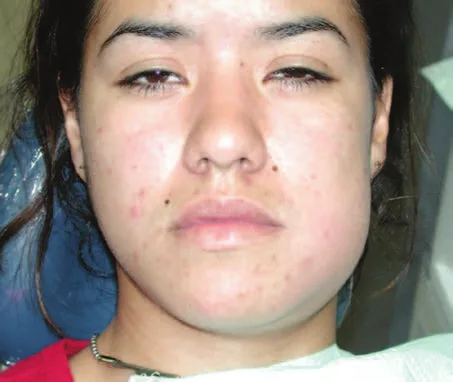
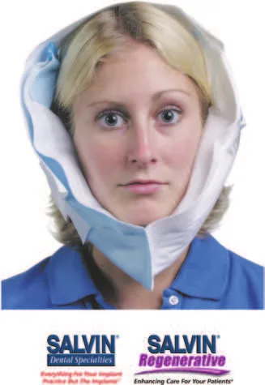

نسخه استخراجشده؛ ترجمه یا تأیید علمی انجام نشده است. وضعیت: captured
یک عدد که همهی تصمیمهای این درس را میسازد: ادم پس از جراحی ایمپلنت در ۴۸ تا ۷۲ ساعت به اوج میرسد.
و نتیجهی داروییاش بلافاصله روشن است: چون التهاب معمولاً بین ۴۸ تا ۷۲ ساعت به اوج میرسد، رژیم دگزامتازون پس از عمل نباید از ۳ روز فراتر رود.
به این استدلال دقت کن — مدت تجویز از فیزیولوژی میآید، نه از عادت. دارویی که پس از فروکش التهاب ادامه یابد، فقط عوارض اضافه میکند.
کرایوتراپی — و مرزهایش. کرایوتراپی یکی از سادهترین و اقتصادیترین روشهای مدیریت التهاب بافت نرم پس از عمل است.
اما چند هشدار جدی دارد:
• یخ را بیش از ۲ روز ادامه نده؛ استفادهی طولانی به تورم برگشتی و تخریب سلولی میانجامد.
• استفادهی نادرست و طولانی از یخ میتواند به مرگ سلولی بهدلیل وازوکنستریکشن طولانی، ایسکمی و ترومبوز مویرگی بینجامد.
• کاربرد یخ در بیماران با حساسیت و عدم تحمل سرما و بیماریهای عروق محیطی باید با احتیاط باشد.
• در استفاده از باندهای صورت باید محتاط بود چون تجویز طولانی یخ میتواند به آسیب بافت نرم بینجامد.
و مرحلهی دوم که اغلب فراموش میشود: پس از ۲ تا ۳ روز، میتوان گرمای مرطوب را به ناحیه اعمال کرد تا جریان خون و لنف افزایش یابد و به پاکسازی پیامدهای التهابی کمک کند.
یعنی دستور «یخ بگذار» یک دستور ناقص است. دستور کامل: کیسهی یخ از روی پوست (با یک لایه پارچه)، ۲۰ دقیقه گذاشتن و ۲۰ دقیقه برداشتن در ۲۴ تا ۳۶ ساعت اول و نه بیش از ۲ روز؛ سپس گرمای مرطوب. دو فاز با دو هدف متضاد — اول محدود کردن، بعد پاکسازی.
اکیموز (کبودی) — الگوی زمانی خودش را دارد: معمولاً بهصورت نواحی غیربرجسته، گرد و نامنظم است که طی ۳ تا ۴ روز پس از عمل شدت میگیرد و سپس کمرنگ و زرد میشود و از بین میرود.
این توالی را به بیمار بگو، وگرنه در روز سوم که کبودی بدتر شده تماس میگیرد و فکر میکند مشکلی پیش آمده.
تریسموس. محتملترین علتش بیحسی بلاک عصب آلوئولار تحتانی است که سوزنش از عضلهی پتریگوئید مدیال بگذرد. همچنین پروسیجرهای پیچیده یا طولانی که به فلپ موکوپریوستیال تمامضخامت نیاز دارند و ادم به دنبال میآورند، میتوانند به تریسموس بینجامند.
و سه راه کاهش احتمالش: بایتبلاک، کوتاه کردن مدت درمان، و سداسیون.

سه واقعیت دربارهی درد پس از جراحی ایمپلنت که انتظار تو و بیمار را تنظیم میکند:
۱. در بیشتر موارد درد شدید نیست و مسکنهای خفیف بدون نسخه میتوانند ناراحتی را مدیریت کنند.
۲. اوج درد حدود ۱۲ ساعت پس از جراحی رخ میدهد و سپس با گذشت زمان کم میشود.
۳. درد بیش از ۲ روز ادامه نخواهد یافت — هرچند این الگو از بیماری به بیمار دیگر فرق میکند.
حالا این سه را کنار هم بگذار و یک ابزار تشخیصی به دست میآوری: دردی که در روز سوم شروع یا تشدید شود، الگوی طبیعی نیست و باید بررسی شود؛ ممکن است نشانهی عارضهای دیگر باشد.
و درد خفیف خودمحدودشونده است و معمولاً با دوزهای توصیهشدهی معمول NSAID برطرف میشود.
مسکنهای غیرمخدر — سه محدودیت که باید بدانی:
• حداکثر دوز روزانه: استامینوفن ۴۰۰۰ میلیگرم، ایبوپروفن ۲۴۰۰ میلیگرم، ناپروکسن ۱۳۷۵ میلیگرم، ترامادول ۴۰۰ میلیگرم (استامینوفن و ترامادول NSAID نیستند).
• آسپرین در دوز ضددرد خطر نسبی عوارض گوارشی بالایی دارد و بهخاطر اثر ضدپلاکتی قوی، داروی انتخابی جراحی ایمپلنت نیست؛ عوارض گوارشی (سوءهاضمه، اروزیون، زخم) در کل خانوادهی NSAID دیده میشود.
• و یک قاعدهی پایش: اگر بیمار بیش از ۵ روز پس از عمل NSAID مصرف کند، فشار خون باید پایش شود.
این قاعدهی آخر را با یونیت ارزیابی پزشکی کنار هم بگذار: NSAID اثر داروهای ضدفشار خون را کم میکند. یعنی مسکنی که برای پنج روز تجویز کردهای، در بیمار پرفشار یک متغیر تازه ساخته است.
کورتیکواستروئیدها — همارزی دوز و مدت اثر:
دوزهای همارز و مدت اثر، کنار هم: هیدروکورتیزون ۲۰ و کورتیزون ۲۵ میلیگرم با مدت اثر کمتر از ۱۲ ساعت، پردنیزون و پردنیزولون ۵ میلیگرم با مدت اثر ۲۴ تا ۳۶ ساعت، و دگزامتازون ۰٫۷۵ میلیگرم با مدت اثر بیش از ۴۸ ساعت.
الگو را ببین: هرچه دوز همارز کمتر، قدرت بیشتر و مدت اثر طولانیتر. و همین است که دگزامتازون را برای اوج التهاب ۴۸ تا ۷۲ ساعته مناسب میکند.
دستور غذایی: در ۲۴ ساعت اول رژیم پرکالری با حجم بیشتر مایعات و غذاهای نرم — دستکم ۲ لیتر مایعات (آب، شیر، آبمیوهی غیراسیدی)؛ نوشیدنی داغ و نی فعلاً ممنوع.
و دلیلش را با درس اول کنار هم بگذار: ترمیم به اکسیژن و مواد مغذی نیاز دارد. بیماری که از ترس درد چیزی نمیخورد، سوخت ترمیم را قطع کرده است.
و یک عارضهی دارویی که کمتر پیشبینی میشود: اسهال مرتبط با آنتیبیوتیک (AAD) — که بهصورت حداقل سه مدفوع آبکی در روز تعریف میشود.
تقریباً همهی گروههای آنتیبیوتیکی میتوانند AAD بسازند، ولی آنهایی با پوشش وسیع — بهویژه سفالوسپورینها، فلوروکینولونها، پنیسیلینهای با پوشش گسترده و کلیندامایسین — بیشترین فراوانی را دارند.
پیشگیریاش ساده است: مصرف آنتیبیوتیک همراه غذا به کاهش AAD کمک میکند. یک جمله در دستور بیمار، یک عارضهی کمتر.
